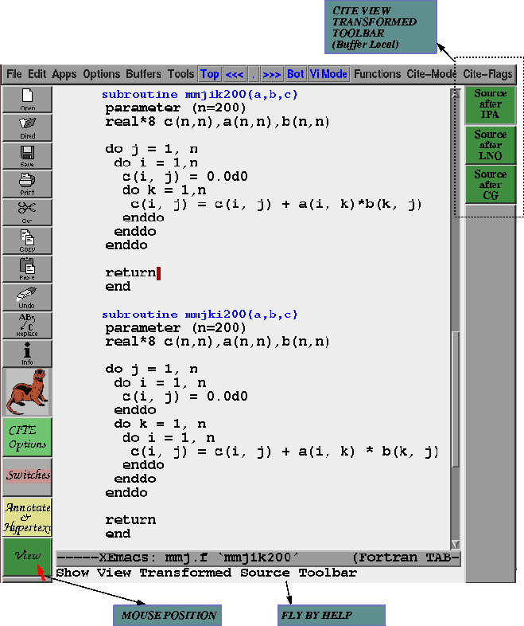

In this section we will use a matrix multiply view the kinds of transformations that the MIPS Pro compiler performs and how it is possible to view it from within CITE.
Consider the following matrix multiply subroutines (after they have been loaded into XEmacs/CITE) and have chosen the View Transformed Toolbar. In this section we will go through the first subroutine to view how the compiler transforms it. We will leave the second one as an exercise for the reader.

There are two things we will go through: